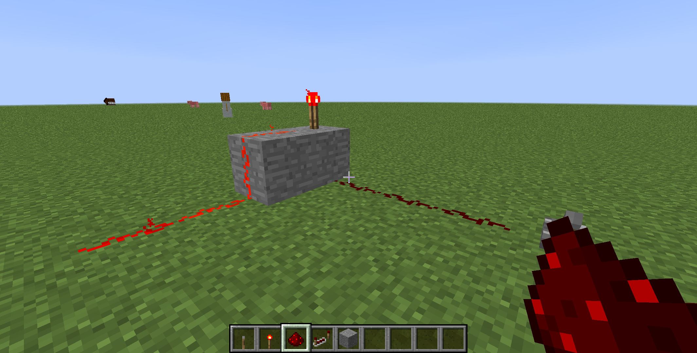
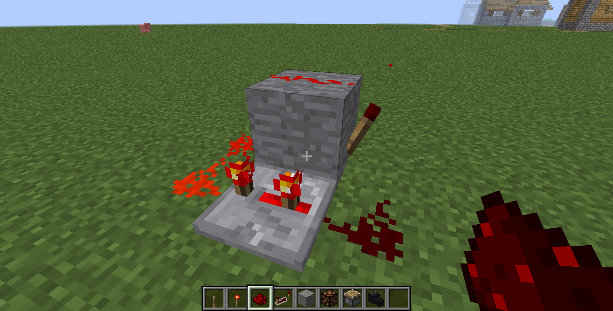
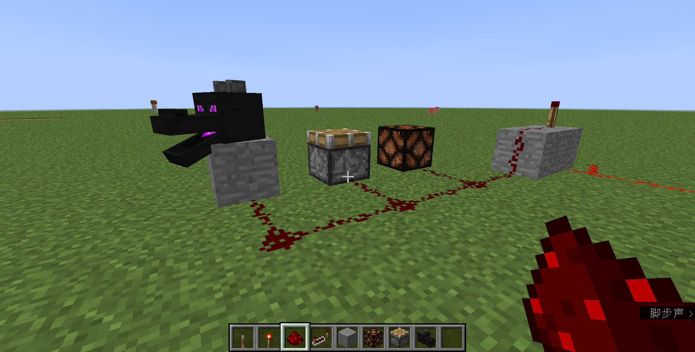
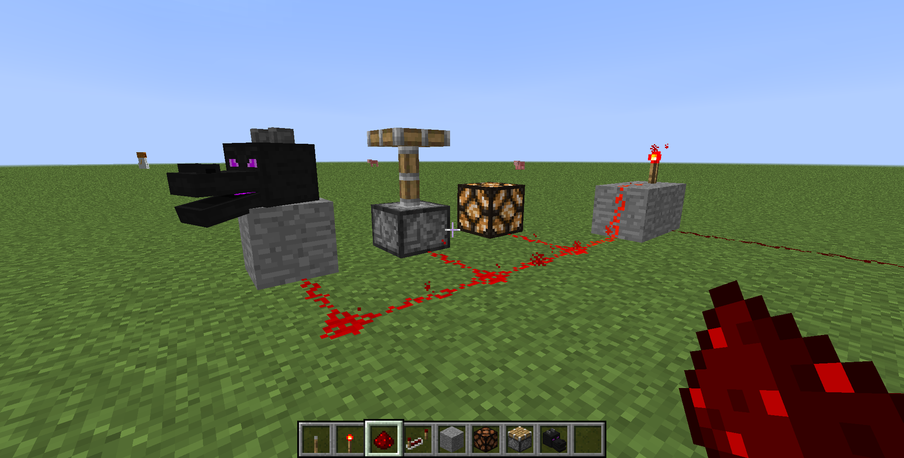
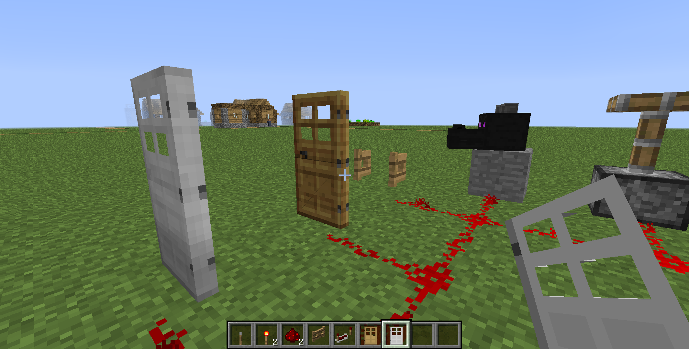
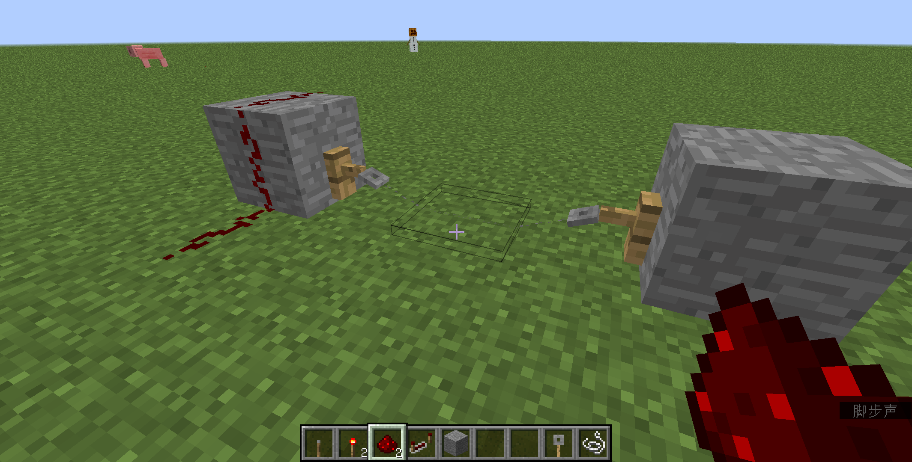
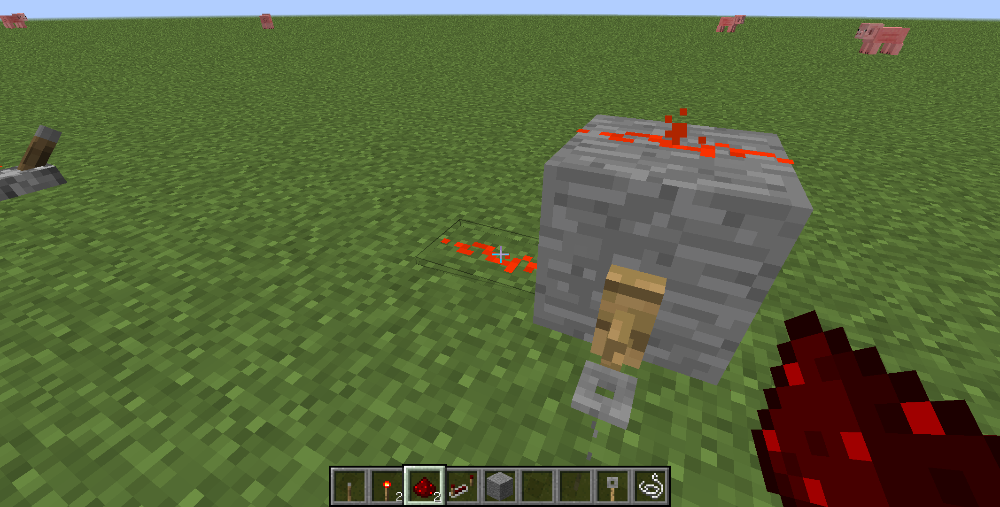

如下图，当插着红石火把的方块（插红石火把的石头）未被激活（右侧的红石是黑的）时，红石火把亮起并激活左侧的红石。拉下拉杆（截图时不小心被手里的红石挡住了），红石火把和左侧的红石会熄灭。
如下图，红石信号经过红石中继器后会变强（左侧的输出端的红石比右侧的输入端更亮），这可以放大红石信号。

如下图，利用红石火把和红石中继器的特性可以做一个简单红石脉冲。右键红石中继器可以调节其延迟，从而调整脉冲周期。注意不要把红石中继器延迟设置太小，否则会卡，脉冲可能停。
如下图，激活的红石可以激活红石灯、活塞、龙首（在创造物品栏“装饰性方块”中）、音符盒、动力铁轨、发射器、TNT、指令方块等。
 如下图，红石可以激活门和活板门、栅栏门，使其打开。
按下图方式放置绊线钩，十字准星对准那一格放置线。当有生物踩在线上时，绊线钩会被触发。
 按钮、压力板、阳光传感器、陷阱箱也可以发出红石信号，使用方法与第一张图中的拉杆相同，这里不再赘述。